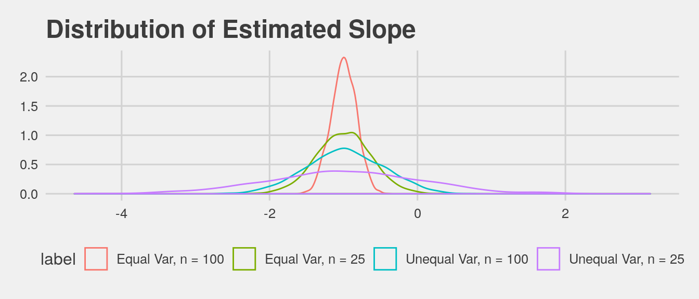

Conduct a simulation study (with numsim at least 500) with n=25 and n=100 observations. Generate data from a true model where Y = 0.5 - 1 * X where the residuals are normal with mean zero but the standard deviation depends on the X’s. Let the distribution of the X’s be uniform [0, 2] and the standard deviation of the residuals be equal to \(0.1+X^2\). Repeat the process for a scenario where your residuals are normally distributed with equal variance = 1 for all X’s. Compare the coverage results and shape of the distribution of the slope parameter.
First we generate the data, fit the model, and extract the slope for the unequal variance problem
numsim <- 2000
gen_sim <- function(n) {
x <- runif(n, min = 0, max = 2)
errors <- rnorm(n, 0, sd = 1 + x^2) # variance is not equal
y <- 0.5 - x + errors
return(data.frame(y, x))
}
fit_slope <- function(n) {
df <- gen_sim(n)
mod <- lm(y ~ x, df)
slope <- coef(mod)['x']
conf <- stats::confint(mod)
covered <- (-1 > conf['x', 1]) && (-1 < conf['x', 2])
return(data.frame(slope, covered))
}Next we do the same assuming equal variances.
gen_sim_equal <- function(n) {
x <- runif(n, min = 0, max = 2)
errors <- rnorm(n, 0, sd = 1) # variance is equal
y <- 0.5 - x + errors
return(data.frame(y,x))
}
fit_slope_equal <- function(n) {
df <- gen_sim_equal(n)
mod <- lm(y ~ x, df)
slope <- coef(mod)['x']
conf <- confint(mod)
covered <- (-1 > conf['x', 1]) && (-1 < conf['x', 2])
return(data.frame(slope, covered))
}
sims <- list(slopes_equal_25, slopes_25, slopes_equal_100, slopes_100)
df <- data.frame('coverage' = numeric(), 'lower' = numeric(),
'upper' = numeric())
for (sim in sims){
b <- binom.test(x = sum(sim$covered), n = length(sim$covered))
rate <- sum(sim$covered)/length(sim$covered)
lower <- b$conf.int[1]
upper <- b$conf.int[2]
df <- rbind(df, data.frame('coverage' = rate, 'lower' = lower,
'upper ' = upper))
}row.names(df) <- c('Equal Var, n = 25', 'Unequal Var, n = 25',
'Equal Var, n = 100', 'Unequal Var, n = 100')
xtable(df)The key idea to this problem was to determine why/if we should care about the equal variance assumption for linear regression. We have been warned about heterscedasticity, as noted in Rice p. 554. Rice says that if the error variance is not constant, standard errors and confidence intervals may be misleading. We tested whether that is true or not for sample sizes n=25 and n=100.
When looking at the distribution for the slope parameters for all four cases (n=25 or n=100, and equal variance or not equal variance), they look relatively similar and normal, centered around -1. However, we do see that for both n=25 and n=100, the distributions for the unequal variance (blue and purple lines on the graph) are wider than when the variance is equal.
The coverage rates are quite different for the different cases. As shown in the chart above, when n=25, the coverage rate for unequal variance is much lower than the equal variance (0.91 compared to 0.94). Also, the confidence interval for the unequal variance case is larger than the equal variance case (a range of 0.03 compared to a range of 0.02). This indicates that when there is unequal variance, not only is there less coverage, but also less consistency in coverage rates as well. The same conclusions were drawn when n=100, as you can see from the chart.
We determined that the equal variance assumption is important, and especially when you have small sample sizes of 25 and 100. In summary, the confidence interval for unequal variances is wider than equal variances when n=25 and when n=100, so the method undercovers (anti-conservative: bad!).